M-VSYNTH2
Synth2, the open-source recreation of Synth1, on the M-VAVE FM-1.
Open-source firmware: Synth2's engine (François Chabloz's recreation of Daichi Laboratory's
Synth1) rewritten in fixed point for the FM-1's chip, every law taken from Synth2's measurements of the
original. Two oscillators and a sub, five filters, two LFOs, effects, delay, chorus and the arpeggiator, on eight
voices over both of the chip's cores. It plays Synth1's .sy1 patches: the same 99 parameters, in and out.
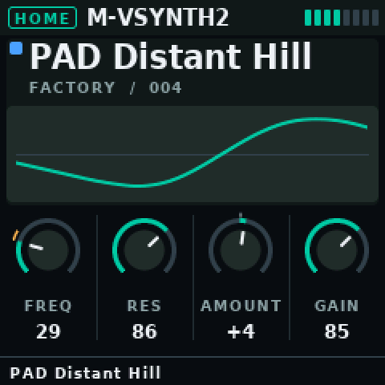
Where it comes from
M-Vsynth2 is the FM-1 edition of Synth2. Synth2 recreates Synth1 from measurements of its sound alone; M-Vsynth2 carries that engine to a chip with no FPU, and checks each part against Synth2's own.
Synth1's patches
Open a .sy1 file, a Synth1 bank folder or a zip of banks
in the patch library and drag them onto the FM-1: eight banks of 128 of your own, with the Synth2 Factory bank
built in.
Checked against Synth2
A compare tool runs the fixed-point engine next to Synth2's float one, case by case: 379 cases, every factory patch among them.
Made for a small chip
Integers only, both cores (every other voice on the second, and back to one if it fails), nothing computed that is not heard, and a limiter on the output.
The engine
| Voices | 8, on both of the chip's cores. POLY, MONO, LEGATO; PORTAMENTO with AUTO; UNISON of 2 to 8 voices with DETUNE, SPREAD, PITCH and PHASE. A VOICES limit. |
|---|---|
| OSC 1 | SINE, SAW, PULSE, TRIANGLE. DETUNE (eight copies around the note), FM from OSC 2, PHASE. |
| SUB | SINE, TRIANGLE, SAW, SQUARE, at the note or an octave down, locked to OSC 1. |
| OSC 2 | SAW, PULSE, TRIANGLE, NOISE. PITCH ±60 semitones, FINE, keyboard TRACK, SYNC to OSC 1, RING. |
| Common | MIX, P/W, KEY SHIFT, TUNE. MOD ENV (attack, decay, amount) to OSC 2 pitch, FM or P/W. |
| Filter | LP12, LP24, HP12, BP12, LPDL, and SH101 (M-Vsynth2's own: the SH-101's VCF). FREQ, RES, envelope AMOUNT, KBD TRACK, SATURATION, velocity switch. FILTER ENV (ADSR). |
| Amp | AMP ENV (ADSR), GAIN, velocity sensitivity, PAN. |
| LFOs | Two: saw, triangle, square, S&H, smooth random, sine. To OSC 2, OSC 1+2, filter, amp, P/W, FM or pan. TEMPO sync, KEY sync. |
| Effects | EFFECT (two analog distortions, digital distortion, decimator, ring modulator, compressor, four phasers), EQ (tone and a peak), DELAY (stereo, cross, ping-pong; tempo times, spread, tone), CHORUS (four types). A limiter on the output. |
| Arpeggiator | Synth1's: UP&DOWN, UP, DOWN, RANDOM; 1 to 4 octaves; BEAT; GATE. Its own tempo, or MIDI clock. |
| Programs | Banks of 128, as Synth1 has them: FACTORY and U1 to U8 in flash, 1024 patches of your own. SAVE into any slot from the panel; the patch library sends, reads and clears. |
| MIDI | USB-MIDI in and out, the TRS MIDI IN. Notes, program change, bank select, pitch bend, the patch's two controller routes, the sustain pedal, clock. Every knob receives a CC of its own. |
Not as Synth2 (the chip's limits): 8 voices, not 32; delay times up to 1 s; the cutoff and the arp move every 16 samples. The README has the list.
The panel
Synth1's sections are pages on the FM-1's screen. Tap a section button for its first page, again for the next; the four knobs on screen are the four knobs under it, and above them a graph of what the page does. Six themes. Everything is on the cheat sheet, made from the firmware's own page table.
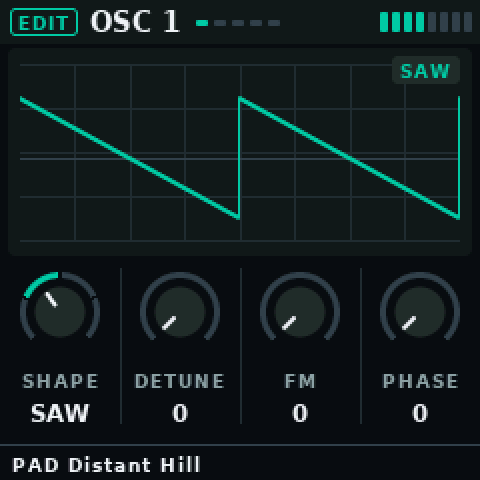
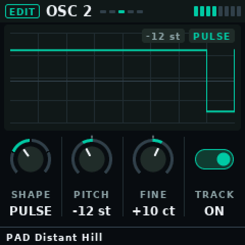
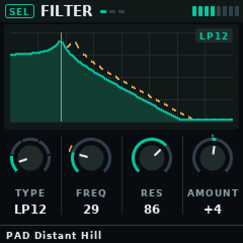
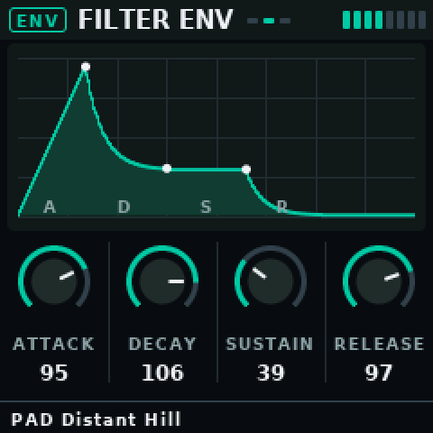
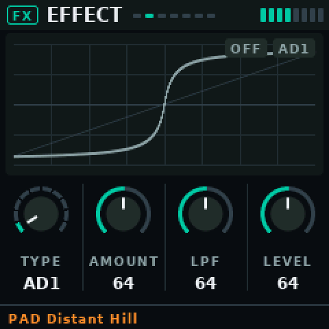
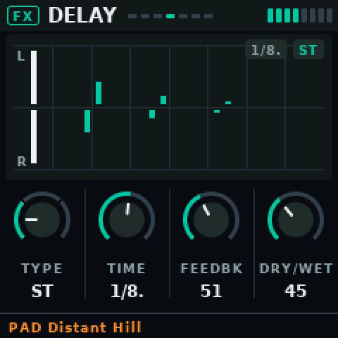
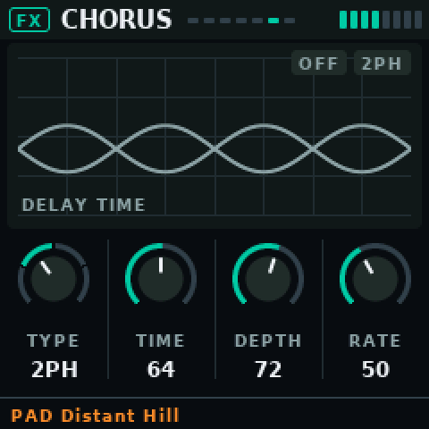
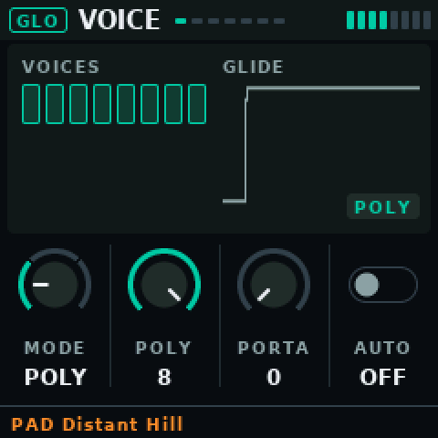
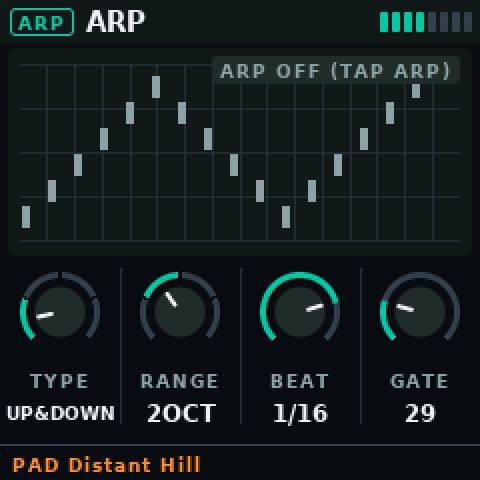
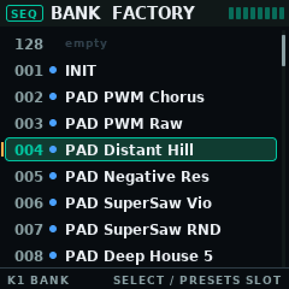
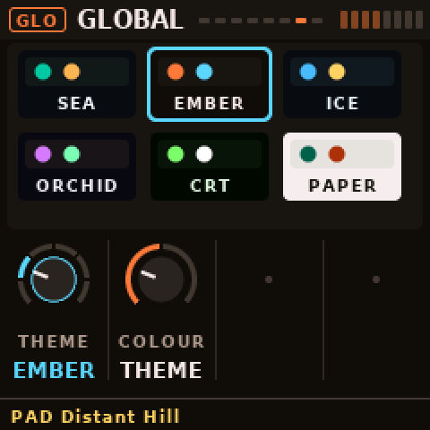
Install
From this site
The easy way: open the firmware page in Chrome or Edge on a computer, connect
the FM-1 by USB, find it, install the latest release (or a .fwsc of your own). If an install is cut
off, plug it back in and install again: the FM-1 stays in update mode until it is done.
With the FM-1 Firmware Hub
Once M-Vsynth2 is listed there: open thefirmwarehub.com in Chrome or Edge, connect the FM-1 by USB, pick M-Vsynth2, install. Going back to another firmware, or the official one, works the same way.
If it won't start: hold OCT- while switching on (the USB rescue: no sound, only the updater) and install a working build from there. Installing firmware is at your own risk.
From the command line
- Download
mvsynth2-X.Y.fwscfrom the latest release. - Connect the FM-1 by USB and run, from a copy of the source:
python3 tools/fm1_install.py mvsynth2-X.Y.fwsc
- The FM-1 restarts into M-Vsynth2. The home screen says M-VSYNTH2.
Patches
The patch library (Chrome or Edge): open .sy1 files,
folders or zip banks, search them, drag one or many onto the FM-1's banks, send, read back.
Build it yourself
M-Vsynth2 is built on Dinghy as M-vance carries it (Linux or WSL, Python 3, the JieLi toolchain).
git submodule update --init # Synth2 (the generators and compare tools) and fm1-kit sh tests/run_unit.sh # the engine's tests sh tests/run_compare.sh # the engine against Synth2's own sh tests/run_docs.sh # this page's screens, the cheat sheet, the library and firmware pages ./build.sh # build/mvsynth2.fwsc python3 tools/fm1_install.py build/mvsynth2.fwsc